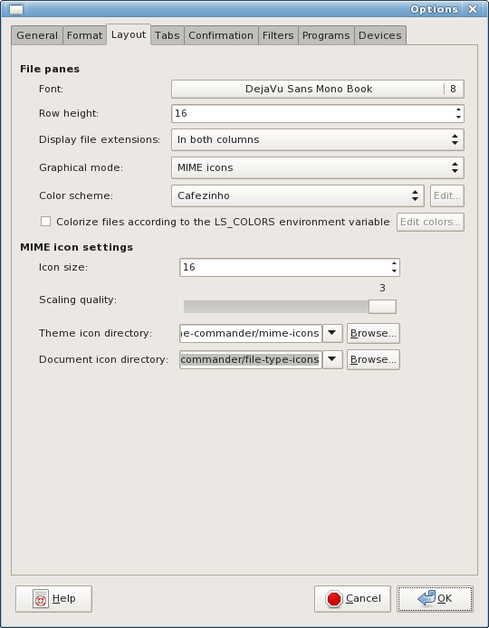

GNOME Commander
A powerful file manager for the Gnome desktop environment
Options slideshow
This is an interactive slideshow of the GNOME Commander options
(shots from v1.4).
Click on the option tabs (or use TAB and ENTER) to switch between them.


